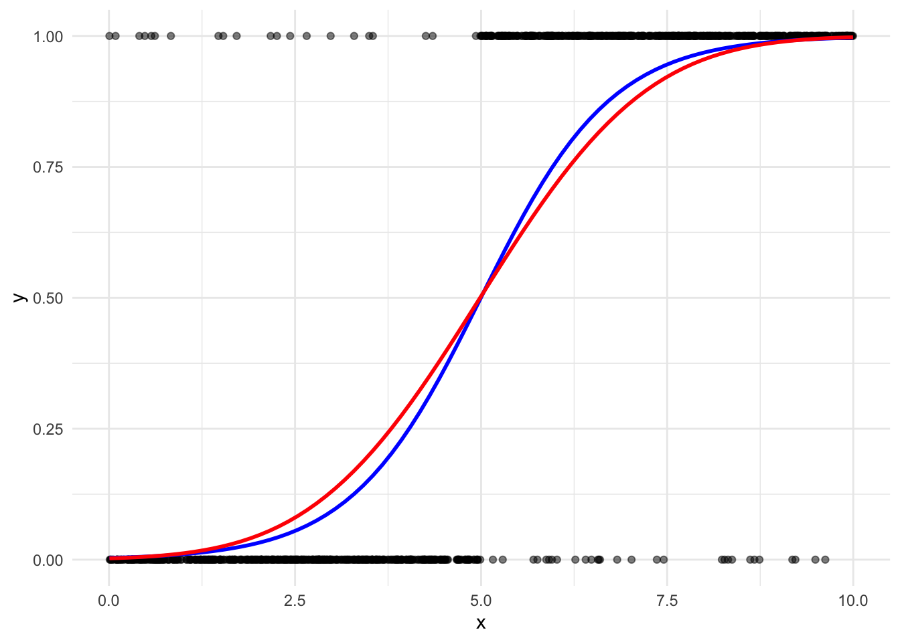
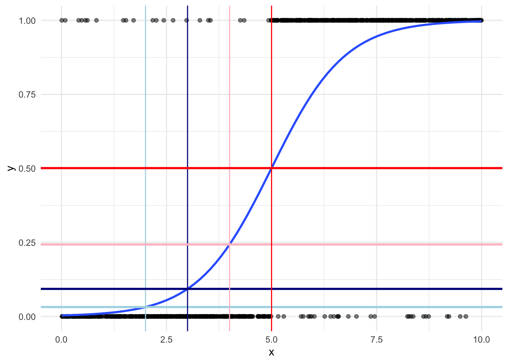

library(tidyverse)
library(rio)
library(skimr)
library(broom)
library(gtsummary)Measuring Marginal Effects on Binary Outcomes
Set up
This section uses the following packages:
Let’s explore marginal and substantive effects using real-world data. How is a person’s decision to vote influenced by the closing date of registration to vote in US elections? Suppose we hypothesize that the further from election day registration closes, the less likely an individual is to vote. We also believe that there are other socio-economic factors that influence a person’s decision to vote for which we need to control. These are their level of education, and whether they are a homeowner.
Let’s explore our data. First, we need to load it in. I will use rio::import().
rioallows you to import or export many different file types with a single command. This makes your code robust to changes in file types: if your data source changes the file type for your data, your code will not break. I recommend it for interactive coding.1 The package documentation can be found here.
voters_raw <- import("/Users/harrietgoers/Documents/GVPT729A/class_sets/data/cps00for729a.dta")This dataset contains individual-level survey data of US adults. It includes: information on whether they voted (vote); the number of days prior to election day their state closes registration (close); their level of education recorded in seven, ordered categories (edu7cat); and whether or not they are a homeowner (homeown).
Next, we need to clean this data up:
voters <- voters_raw |>
transmute(vote = factor(vote, levels = c(0, 1), labels = c("Did not vote", "Voted")),
close = as.integer(close),
edu7cat = factor(edu7cat),
homeown = factor(homeown, levels = c(0, 1), labels = c("Not homeowner", "Homeowner"))) |>
labelled::set_variable_labels(vote = "Voted", close = "Registration closing", edu7cat = "Education level", homeown = "Homeownership") |>
drop_na()
head(voters) vote close edu7cat homeown
1 Voted 10 6 Homeowner
2 Voted 29 6 Homeowner
3 Voted 28 4 Homeowner
4 Voted 0 5 Homeowner
5 Voted 25 7 Not homeowner
6 Voted 25 5 Not homeownerNote that we have removed any observations with missing values.
If your categorical variables are stored as numeric data in your dataset, your model will treat them as continuous numeric variables. It will not exclude a base category. This will cause significant problems with your model. Always convert categorical variables to factors.2
Now, let’s look at a summary of our data using skimr::skim():
skim(voters)| Name | voters |
| Number of rows | 2188 |
| Number of columns | 4 |
| _______________________ | |
| Column type frequency: | |
| factor | 3 |
| numeric | 1 |
| ________________________ | |
| Group variables | None |
Variable type: factor
| skim_variable | n_missing | complete_rate | ordered | n_unique | top_counts |
|---|---|---|---|---|---|
| vote | 0 | 1 | FALSE | 2 | Vot: 1450, Did: 738 |
| edu7cat | 0 | 1 | FALSE | 7 | 4: 724, 5: 623, 6: 380, 7: 186 |
| homeown | 0 | 1 | FALSE | 2 | Hom: 1665, Not: 523 |
Variable type: numeric
| skim_variable | n_missing | complete_rate | mean | sd | p0 | p25 | p50 | p75 | p100 | hist |
|---|---|---|---|---|---|---|---|---|---|---|
| close | 0 | 1 | 22.29 | 9.87 | 0 | 15 | 29 | 30 | 30 | ▁▁▂▁▇ |
Our dataset contains 2,188 observations and 4 variables. Of those 2,188 individuals, 66% voted.
Introduction
Our goal is to make inferences from the sample to the population about how changes in our independent variable of interest, \(x\), influences the probability of success in our outcome of interest, \(y\). We can calculate this effect for each known value of \(x\), or the marginal effect. We can also calculate this effect for a meaningful change in the value of \(x\), or the substantive effect. We will discuss this in the next section.
The marginal effect measures the change in the probability of success gained (or lost) from changing \(x_i\) by one unit. In our example, we want to understand the marginal effect of close, or how increasing the number of days prior to an election registration closes by one impacts the likelihood that an individual will vote.
Linear probability models
In linear models, this effect is constant. To illustrate, let’s fit a linear probability model to our voting data. We will focus only on the effect of close on vote for now.
Note that
lm()will not allow us to fit a linear model to binary data!
voters_linear <- mutate(voters, vote = as.integer(vote) - 1)
m1 <- lm(vote ~ close, data = voters_linear)
tbl_regression(m1, intercept = T)| Characteristic | Beta | 95% CI1 | p-value |
|---|---|---|---|
| (Intercept) | 0.71 | 0.66, 0.75 | <0.001 |
| Registration closing | 0.00 | 0.00, 0.00 | 0.060 |
| 1 CI = Confidence Interval | |||
ggplot(voters_linear, aes(x = close, y = vote)) +
geom_point() +
geom_smooth(method = "lm", se = F) +
theme_minimal()Interpreting the coefficients
This model suggests that increasing the registration closing day by one decreases the likelihood than individual will vote by 0.192%, on average. However, this result is not statistically significant. A individual registered in a state with election day registration (\(close = 0\)) will vote 71% of the time, on average.
The important take away from this is that the marginal effect of close on vote is constant across all values of close. If your state changes from election day registration to closing registration one day prior to election day, your probability of voting decreases 0.192%. Similarly, if your state changes from 20 days prior to 21 days prior to election day, your probability of voting decreases 0.192%.
Predicting outcomes using your LPM
Let’s take a closer look at this. We can use broom::augment() to see what our model predicts the probability of an individual to vote to be for each of the plausible closing dates (0 to 30 days prior to an election):
pred_m1 <- augment(m1, newdata = tibble(close = 0:30), type.predict = "response")
head(pred_m1)# A tibble: 6 × 2
close .fitted
<int> <dbl>
1 0 0.706
2 1 0.704
3 2 0.702
4 3 0.700
5 4 0.698
6 5 0.696ggplot(pred_m1, aes(x = close, y = .fitted * 100)) +
geom_line() +
theme_minimal() +
labs(x = "Closing date (days)",
y = "Predicted probability of voting (%)")Marginal effects
Finally, let’s look at the difference in the predicted probability of voting by chnaging the closing date by one day for all plausible values of close:
me_m1 <- pred_m1 |>
arrange(close) |>
mutate(diff = .fitted - lag(.fitted))
head(me_m1)# A tibble: 6 × 3
close .fitted diff
<int> <dbl> <dbl>
1 0 0.706 NA
2 1 0.704 -0.00192
3 2 0.702 -0.00192
4 3 0.700 -0.00192
5 4 0.698 -0.00192
6 5 0.696 -0.00192ggplot(me_m1, aes(x = close, y = diff * 100)) +
geom_line() +
geom_hline(yintercept = 0, colour = "darkgrey") +
theme_minimal() +
scale_y_continuous(limits = c(-0.3, 0.3)) +
labs(x = "Closing date (days)",
y = "Difference in predicted probability of voting (%)")
As expected, this difference is constant. It is, in fact, the close coefficient. In LPMs, the variable coefficients are their marginal effects.
Latent variable models
Both logit and probit models are curved. Therefore, the effect of a one-unit increase in \(x_i\) on the probability that \(Y=1\) is not constant. In fact, the marginal effect of a one-unit change in \(x_i\) depends on the starting value of \(x_i\). As demonstrated in the figure below, the steepest change for both the logit (blue) and probit (red) models occurs around the middle values of \(x\).

In fact, these marginal effects are bell-shaped:
To illustrate, let’s look at the effect on the probability of success of moving from \(x = 2\) to \(x = 3\) compared to the effect of moving from \(x = 4\) to \(x = 5\):

Moving from \(x = 2\) (highlighted in light blue) to \(x = 3\) (highlighted in dark blue) increases the probability of success by 0.044, from 0.013 to 0.058. Moving the same interval of one unit from \(x = 4\) (highlighted in pink) to \(x = 5\) (highlighted in red) increases the probability of success by 0.34, from 0.217 to 0.557. That’s a 7.664 times increase in the effect of a one unit change in \(x\).
Therefore, to measure the effect of moving from one value of \(x\) to another in a non-linear model, we need to know which values of \(x\) we are moving between.
We will look at logit and probit in turn.
Logistic Regression
First, let’s fit our logit model, focusing only on the effect of close on vote:
m2 <- glm(vote ~ close, data = voters, family = binomial(link = "logit"))
tbl_regression(m2, intercept = T)| Characteristic | log(OR)1 | 95% CI1 | p-value |
|---|---|---|---|
| (Intercept) | 0.87 | 0.65, 1.1 | <0.001 |
| Registration closing | -0.01 | -0.02, 0.00 | 0.061 |
| 1 OR = Odds Ratio, CI = Confidence Interval | |||
Interpreting the coefficients
The coefficients presented above are log odds ratios. We can easily interpret their statistical significance and their sign. For example, we know that our independent variable of interest, close, is not statistically significant (\(p = 0.061\)). We also know that its effect on an individual’s decision to vote is negative: as days before an election the date of voter registration closes increases, the likelihood that an individual will vote decreases.
Remember that logit (and probit) models are simply transformed linear models. We take our linear model of the relationship between close and vote and reshape it to better predict probabilities (bound it between 0 and 1, and reshape it to reflect varying effects of changes of \(x\) on \(y\)). We can reshape these coefficients to make them more interpretable.
Odds ratios
The regression coefficient provided above is a log odds ratio. Log-transformed variables are really hard to interpret. So, let’s get rid of that log. The opposite operation to taking the logarithum of a number is to exponentiate it. To demonstrate:
tibble(x = 1:5,
log_x = log(x),
exp_log_x = exp(log_x))# A tibble: 5 × 3
x log_x exp_log_x
<int> <dbl> <dbl>
1 1 0 1
2 2 0.693 2
3 3 1.10 3
4 4 1.39 4
5 5 1.61 5So, exponentiating the log odd ratio will get us the odds ratio. The odds ratio is much easier to interpret. If the probability of success of an outcome is \(p\) and, therefore, the probability of failure is \(1-p\), the the odds of success is \(\frac{p}{1-p}\). Now, dividing two odds by each other gives you their odds ratio. For example, if two outcomes have the odds \(\frac{p_1}{1-p_1}\) and \(\frac{p_2}{1-p_2}\), then these outcomes have an odds ratio of \(\frac{\frac{p_1}{1-p_1}}{\frac{p_2}{1-p_2}}\).
This is particularly useful for comparing the probability of success and failure for a given value of \(x_i\). When the odds ratio is 1, the odds of success are the same as the odds of failure (\(\frac{0.5}{0.5} = 1\)). When the odds ratio is greater than 1, the odds of success are greater than the odds of failure (for example, \(\frac{0.8}{0.2} = 4\)). Where the odds ratio of success is four, the odds of success are four times higher than the odds of failure.
Getting back to our model, the odds ratio that an individual will vote is:
\[ e^{-0.01} = 0.99 \]
So, increasing the closing date by one day makes the decreases the odds that an individual will vote by 0.01 (or \(1 - 0.99\)).
Happily, gtsummary::tbl_regression() can easily present these results for us:
tbl_regression(m2, intercept = T, exponentiate = T)| Characteristic | OR1 | 95% CI1 | p-value |
|---|---|---|---|
| (Intercept) | 2.39 | 1.91, 3.00 | <0.001 |
| Registration closing | 0.99 | 0.98, 1.00 | 0.061 |
| 1 OR = Odds Ratio, CI = Confidence Interval | |||
And we can also get these results programmatically using broom::tidy():
tidy(m2, exponentiate = T)# A tibble: 2 × 5
term estimate std.error statistic p.value
<chr> <dbl> <dbl> <dbl> <dbl>
1 (Intercept) 2.39 0.115 7.60 2.90e-14
2 close 0.991 0.00467 -1.88 6.07e- 2Predicted probabilities
Odds ratios are certainly easier to interpret than log odds ratios, but they are still a bit awkward. It is easier again to discuss the effects of changing our independent variables of interest in terms of probabilities, rather than odds.
Remember, the odds ratio is simply the odds of success divided by the odds of failure:
\[ OR = \frac{\frac{p}{1-p}}{\frac{1-p}{p}} \]
We are interested in getting the odds of success (\(p\)). To get this:
\[ p = \frac{OR}{1 + OR} \]
More generally:
\[ Pr(Y = 1|X) = \frac{e^{X\beta}}{1 + e^{X\beta}} \]
For our simple model, this is:
\[ Pr(vote = 1 | close) = \frac{e^{0.872 - 0.01close + \epsilon}}{1 + e^{0.872 - 0.01close + \epsilon}} \]
Where \(vote = 0.872 - 0.01 close + \epsilon\) is our logit model. Critically, the predicted probability still includes close. We need to provide a value for close to calculate a predicted probability.
Interpreting the intercept
As usual, the intercept should be interpreted as the expected value when all independent variables are set to 0. This is simple to interpret in terms of the probability of success. Remember:
\[ Pr(Y = 1 | X) = \frac{e^{X\beta}}{1 + e^{X\beta}} \]
Therefore, for our voter model:
\[ \frac{e^{\beta_0}}{1 + e^{\beta_0}} = \frac{e^{0.87}}{1 + e^{0.87}} = \frac{2.39}{3.39} = 0.705 \]
The probability that an individual in a state with election day registration will vote is 70.5%, on average.
Predicting outcomes
You now have a couple of different options in terms of how you present and interpret your predicted outcomes from your logit model: log odds ratios, odds ratios, and predicted probability.
I find predicted probabilities the easiest to interpret and with which to work. Using augment::broom(), we can easily produce our predicted probabilities for each of the plausible values of close:
pred_m2 <- augment(m2, newdata = tibble(close = 0:30), type.predict = "response")
pred_m2# A tibble: 31 × 2
close .fitted
<int> <dbl>
1 0 0.705
2 1 0.703
3 2 0.701
4 3 0.700
5 4 0.698
6 5 0.696
7 6 0.694
8 7 0.692
9 8 0.690
10 9 0.688
# … with 21 more rowsAll this function is doing, is calculating \(Pr(Y = 1 | X) = \frac{e^{X\beta}}{1 + e^{X\beta}}\) for each of these values of close. You can check this yourself:
pred_prob_logit <- function(close) {
intercept <- tidy(m2) |>
filter(term == "(Intercept)") |>
pull(estimate)
beta_close <- tidy(m2) |>
filter(term == "close") |>
pull(estimate)
exp(intercept + (beta_close * close)) / (1 + exp(intercept + (beta_close * close)))
}
# Calculate the predicted probability an individual will vote when closing date is
# three days prior to the election
pred_prob_logit(3)[1] 0.6996091Visually:
ggplot(pred_m2, aes(x = close, y = .fitted * 100)) +
geom_line() +
theme_minimal() +
labs(x = "Closing date (days)",
y = "Predicted probability of voting (%)")Okay, so this looks linear but I promise it is not! We will get to that shortly. This graph shows the predicted probability that an individual will vote for each plausible closing date.
Marginal effects
Finally, let’s look at the difference in the predicted probability of voting by changing the closing date by one day for all plausible values of close:
me_m2 <- pred_m2 |>
arrange(close) |>
mutate(diff = .fitted - lag(.fitted))
head(me_m2)# A tibble: 6 × 3
close .fitted diff
<int> <dbl> <dbl>
1 0 0.705 NA
2 1 0.703 -0.00182
3 2 0.701 -0.00183
4 3 0.700 -0.00184
5 4 0.698 -0.00184
6 5 0.696 -0.00185ggplot(me_m2, aes(x = close, y = diff * 100)) +
geom_line() +
geom_hline(yintercept = 0, colour = "darkgrey") +
theme_minimal() +
scale_y_continuous(limits = c(-0.3, 0.3)) +
labs(x = "Closing date (days)",
y = "Difference in predicted probability of voting (%)")The effect change is not constant. Moving from \(close = 0\) to \(close = 1\) decreases the predicted probability that an individual will vote by 0.182%. Moving from \(close = 20\) to \(close = 21\) decreases the predicted probability that an individual will vote by 0.195%.
These marginal effects are really small! Does changing the registration closing date in a state have a substantial impact on the likelihood that an individual will vote? We will discuss interpreting substantive significance in the next chapter.
Probit Regression
Next, let’s fit a probit model, focusing only on the effect of close on vote:
m3 <- glm(vote ~ close, data = voters, family = binomial(link = "probit"))
tbl_regression(m3, intercept = T)| Characteristic | Beta | 95% CI1 | p-value |
|---|---|---|---|
| (Intercept) | 0.54 | 0.40, 0.68 | <0.001 |
| Registration closing | -0.01 | -0.01, 0.00 | 0.059 |
| 1 CI = Confidence Interval | |||
Interpreting the coefficients
The regression coefficients presented above give the change in the z-score or probit index for a one unit change in the predictor. These can be interpreted as the change in the probability of success for a one unit change in the predictor. Unlike logit, we get straight to the point.
Interpreting the intercept
TODO
Predicting outcomes
Using augment::broom(), we can easily produce our predicted probabilities for each of the plausible values of close:
pred_m3 <- augment(m3, newdata = tibble(close = 0:30), type.predict = "response")
pred_m3# A tibble: 31 × 2
close .fitted
<int> <dbl>
1 0 0.705
2 1 0.703
3 2 0.702
4 3 0.700
5 4 0.698
6 5 0.696
7 6 0.694
8 7 0.692
9 8 0.690
10 9 0.688
# … with 21 more rowsVisually:
ggplot(pred_m3, aes(x = close, y = .fitted * 100)) +
geom_line() +
theme_minimal() +
labs(x = "Closing date (days)",
y = "Predicted probability of voting (%)")Marginal effects
Finally, let’s look at the difference in the predicted probability of voting by changing the closing date by one day for all plausible values of close:
me_m3 <- pred_m3 |>
arrange(close) |>
mutate(diff = .fitted - lag(.fitted))
me_m3# A tibble: 31 × 3
close .fitted diff
<int> <dbl> <dbl>
1 0 0.705 NA
2 1 0.703 -0.00185
3 2 0.702 -0.00185
4 3 0.700 -0.00186
5 4 0.698 -0.00186
6 5 0.696 -0.00187
7 6 0.694 -0.00187
8 7 0.692 -0.00188
9 8 0.690 -0.00188
10 9 0.688 -0.00189
# … with 21 more rowsggplot(me_m3, aes(x = close, y = diff * 100)) +
geom_line() +
geom_hline(yintercept = 0, colour = "darkgrey") +
theme_minimal() +
scale_y_continuous(limits = c(-0.3, 0.3)) +
labs(x = "Closing date (days)",
y = "Difference in predicted probability of voting (%)")As with our logit model, the effect change is not constant. Moving from \(close = 0\) to \(close = 1\) decreases the predicted probability that an individual will vote by 0.185%. Moving from \(close = 20\) to \(close = 21\) decreases the predicted probability that an individual will vote by 0.195%.